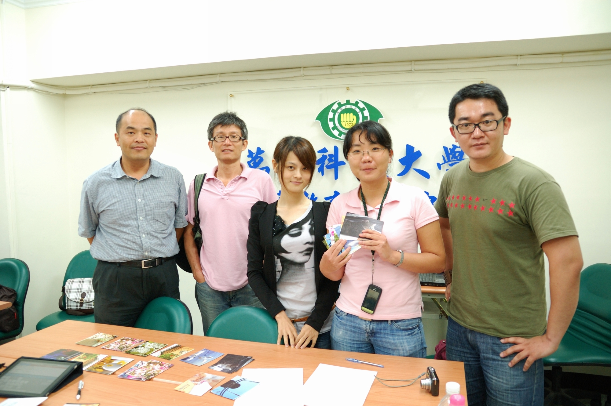

也紀念我們永遠的朋友 李士傑先生（Shih-Chieh Ilya Li）。
2011 年台灣維基人夏聚 踏出寫作的第一步
2011 年 7 月 21 日，萬能科大台北教學中心的教室裡，聚集了來自全台各地 30 幾名熱血的朋友，從三年級到八年級跨越了多個世代，一同參與台灣維基社群夏季聚會。有鑑於近年來，台灣社群的活躍編輯者數量不多，聚會參與者反而是以想要進入維基百科的新手、觀察者為主，因此，本次聚會特別以「寫作訓練營」的形式召開。希望在活躍編者的引領下，能夠協助新手慢慢踏入貢獻編輯的行列。
▲ 圖1 2011年台灣維基夏聚大合照。Harenwang 拍攝，採用 CC-BY-SA 3.0 與 GFDL 1.2 版或任一後續版本條款雙重授權
本次教學課程的安排跳過枯燥艱深的維基語法教學，以如何撰寫好的條目內容作為核心。第一堂課先由講師 Dodd 講述「資料的蒐集與判讀」，除了介紹「一次、二次、三次資料」的概念外，也列舉出許多資料蒐集的管道，並且說明如何判別各管道的權威性。透過這樣的蒐集與判別，為撰寫一個合乎「可供查證」原則的條目打下基礎。
▲ 圖2 講師 Reke 為學員解說寫作筆調需注意事項。Harenwang 拍攝，採用 CC-BY-SA 3.0 與 GFDL 1.2 版或任一後續版本條款雙重授權
隨後，由主辦單位分組，各組自我介紹過後，第二堂課由 Supaplex 講述如何建立條目的架構，包括擬定條目名稱、建立章節以及設定分類等。本堂課的後半段，則採用分組搶答的遊戲方式，讓學員們熟悉如何選定條目名稱以及進行分類，過程十分熱鬧。第三堂課則由 Reke 針對寫作筆調的問題進行講授，一般在維基中常見的錯誤，如立場不中立、侵犯版權，或是筆調不似百科全書的問題，都在本堂課中提出了實用的解決之道。
經過三堂課程的訓練，最後則進入到本次聚會的重頭戲：條目寫作競賽。主辦單位發下了資料與稿紙，在有限的時間內，各組學員必須分工合作，應用課堂所學，快速的判別資料的可信度、建立綱目，以「獅球嶺砲臺」為題，完成一個簡短的條目。雖然很多人都是第一次進行百科寫作，面對厚厚的期刊論文都有些手忙腳亂，但是到了最後關頭五組依然順利繳出了協作成果。在經過三位講師一一檢視並且討論之後，由第四組擊敗其他各組，取得比賽的冠軍
▲ 圖3 講師在條目寫作競賽時間，為各組解答關於寫作遇到的問題。Harenwang 拍攝，採用 CC-BY-SA 3.0 與 GFDL 1.2 版或任一後續版本條款雙重授權
冠軍小組的組長完全沒有維基寫作經驗，之前也沒有維基帳號。不過主辦單位貼心地請她當場註冊帳號，並協助將該組協作的成果轉至維基百科。目前在維基百科查找「獅球嶺砲臺」已經可以看到當日該組協作的成績。

▲ 圖4 獲得優勝的第四組成員合影。Harenwang 拍攝，採用 CC-BY-SA 3.0 與 GFDL 1.2 版或任一後續版本條款雙重授權
目前台灣維基社群的聚會活動主要有兩個系統，其一為全國性的季聚，每季一次，由主辦人規劃主題與活動，形式多元；另外則是各地維基人組織的地方小聚，目前台北雙週一次、台中每月一次較為固定舉行，形式則多以參與者聊天分享為主。其中台北聚會近期之內將規劃每月一次的寫作工作坊，將以分享寫作心得與發表寫作成果為主，以便延續本次聚會成果，讓更多人熟悉並投入分享知識的行列。錯過本次夏聚的朋友，可以在下回進入維基百科時多注意頁頂的公告取得最新的社群聚會資料。
▲ 圖5 中華民國維基媒體協會理事魔法設計師（右）與台中聚會主辦人安可（左）彼此討論關於維基的議題。Harenwang 拍攝，採用 CC-BY-SA 3.0 與 GFDL 1.2 版或任一後續版本條款雙重授權
相關連結
2011 臺灣維基夏聚 https://zh.wikipedia.org/wiki/Wikipedia:2011SUTW
中文維基百科－獅球嶺砲臺 https://zh.wikipedia.org/wiki/獅球嶺砲臺
作者簡介
Reke，台灣維基社群成員，PTT 電影板板主，主業為文字工作者。著迷於電影，耽溺於文字；在現實裡怯弱地柔從，在評論裡驕傲地反抗。電影部落格：https://rekegiga.blogspot.com/
專欄總覽


E-Mail：contact@openfoundry.org Address：台北市南港區研究院路2段128號 中央研究院資訊科學研究所 . 隱私權條款. 使用條款

評論
我如何能取得台灣維基人的MAI L
本人有分問卷想拜託他們協助！
謝謝！感恩！